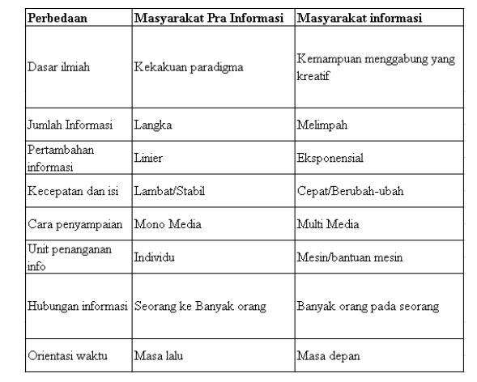

Ciri-ciri Masyarakt dengan Teknologi Informasi Modern
Download ModulePerbedaan Masyarakat Informasi dan Pra Informasi
Tabel Perbedaan masyarakat informasi dan masyarakat prainformasi

Penggunaan Teknologi Informasi Di Masyarakat
| bidang perbankan | bidang perdagangan |
| bidang transportasi | bidang pendidikan |
Pengaruh Informasi Terhadap Masyarakat
Dampak positif teknologi informasi :
1) Arus informasi sangat cepat sehingga masyarakat tidak ketinggalan
informasi.
2) Masyarakat dengan mudah mengakses informasi kapanpun mereka
mau.
3) Wawasan masyarakat terhadap perkembangan dunia semakin luas
karena informasi-informasi yang mudah diakses.
4) Mempermudah pelaku bisnis untuk berbisnis secara online.
5) Mempermudah masyarakat untuk berkomunikasi tanpa harus bertemu.
6) Dapat digunakan sebagai sarana mencari informasi untuk bidang
pendidikan dan kebudayaan.
Dampak negatif teknologi informasi :
1) Berkurangnya proses sosialisasi secara nyata.
2) Kejahatan dunia maya meningkat.
3) Konten negatif yang berkembang dengan pesat.
4) Meningkatnya oknum yang memfitnah dan juga pencemaran nama baik.
5) Kecanduan terhadap internet bisa menyebabkan masyarakat tidak
produktif.
6) Berkurangnya pola interaksi dengan orang sekitar.
7) Terjadinya pelanggaran privasi.
8) Sifat plagiat makin bertambah.
9) Pembajakan hak cipta suatu karya.
10) Perjudian online meningkat.
11) Meningkatnya aksi pornografi